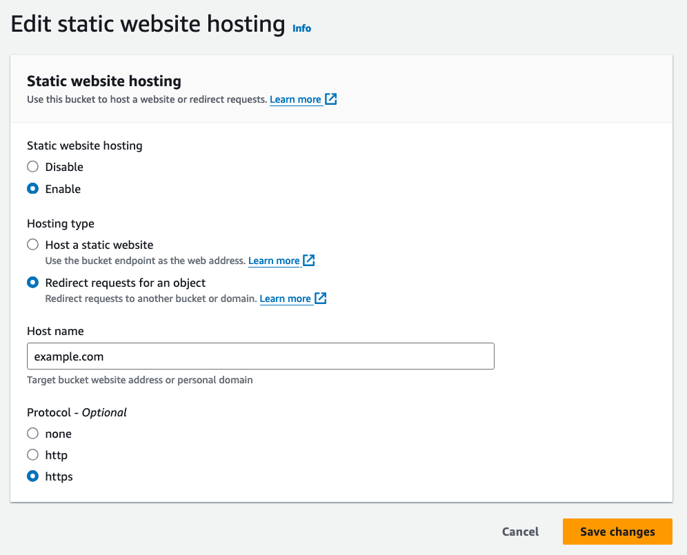
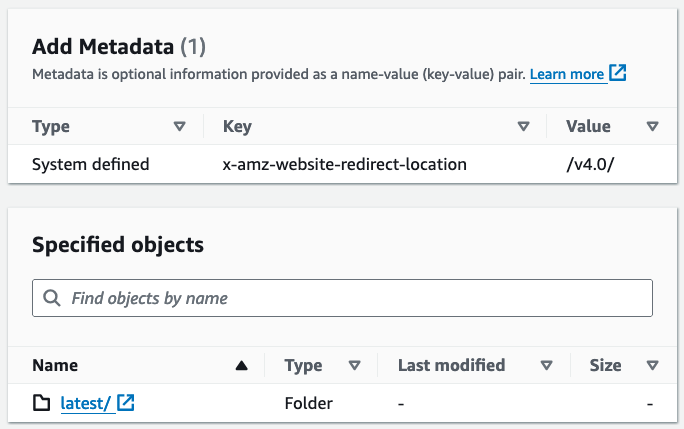

Introduction
Ah, yet another "Amazon CloudFront + Amazon S3 combo” article for Web hosting…”
Yes, it is… but with a twist that's worth the attention.
By now, it feels like every Cloud enthusiast (and their pet cat) has written a blog post about it.
But what if there were a few tricks to spice things up and maybe even retire that old Apache once and for all?
In this article, we'll explore how to use Amazon S3 and Amazon CloudFront to set up smart redirects to our main site without maintaining a web server.
We'll also examine how to efficiently use Amazon S3 metadata to ensure that users are always directed to the latest version of our content.
Let's dive into the topic!
The Basics
Before we get into the serious stuff, let's take a quick trip down memory lane:
- Amazon S3: Amazon S3 is an object storage service that is also used to host static websites, serving HTML, CSS, JavaScript, and image files directly in a bucket.
- Amazon CloudFront Integration: Amazon CloudFront enhances this setup by serving content from edge locations closer to the users, improving load times and reducing latency. It also allows for custom domain names via SSL/TLS certificates.
The Challenges: Website Redirects
Let's suppose that our website is running smoothly on Amazon S3, with CloudFront ensuring it's faster than ever. But what about those other domain names we've accumulated over time?
Let's say we have oldexample.com, oldexample1.com, and a few others that all need to redirect to example.com.
In a traditional setup with a virtual machine, we could easily configure a redirect in the virtual host settings. However, maintaining a VM just for redirects adds unnecessary complexity and cost.
Sure, some DNS services let us create 301-302 redirect records, but this approach feels like taking the easy way out, and not everyone can migrate to those services.
What about setting up a CNAME record?
Unfortunately, that doesn't provide a true redirect and can have negative implications for our SEO.
Then, there's the option to use CloudFront Functions or Lambda@Edge. Both are valid choices: CloudFront Functions are fast and cost-effective but have a 10KB limit, so it's better not to fill them up just with redirects. Lambda@Edge doesn't have that size limitation, but it's slower and comes with a higher cost.
We also need to maintain the code for both solutions.
So, how do we implement these redirects without falling into DNS purgatory or overcomplicating our infrastructure?
The Solution
Here's where things get interesting: what if we put an Amazon CloudFront + Amazon S3 setup in front of our existing Amazon CloudFront + Amazon S3 website?
It may sound weird, but believe us, it works! Here's how:
- Create a new Amazon S3 bucket and enable website hosting, configuring it to redirect to our main site.
- In the Amazon S3 website hosting settings, set the redirect to our primary domain (e.g., example.com).
- Launch a new Amazon CloudFront distribution. Under Alternate Domain Names (CNAMEs), add all our legacy domains, such as oldexample.com and oldexample1.com.
- Set the new Amazon S3 bucket endpoint as the origin for this new Amazon CloudFront distribution.
- Configure cache, cookie policies, and CORS settings as needed.

Voilà! All traffic from the old domains will now redirect to our new site without the hassle of managing any virtual hosts or complicated infrastructure.
Bonus Tip - Consistently Use of WWW for SEO
Consistency is key in SEO, and maintaining a uniform URL structure can be tricky. To ensure our URLs stay SEO-friendly, we can use the Amazon S3 website hosting option to always redirect to the "www" version of our domain.
It's a small change, but it makes a big difference!
Amazon S3 Metadata Management
Now let's dive into how to granularly manage redirects for paths and files.
Let's say we need to manage multiple versions of our product, and each version lives in a folder (/v1.0/, /v2.0/ ). When a new version is released, we want users to be redirected to the latest version without the headache of constantly updating links or maintaining a list of redirects. This is where the Amazon S3 metadata field x-amz-website-redirect-location comes to aid.
Use Case
Consider this scenario: we have versioned directories for our product
- /v1.0/
- /v2.0/
- /v3.0/ (the latest version)
We want anyone visiting /latest/ to be redirected to /v3.0/, and when we release /v4.0/, we want to update that redirect effortlessly.
Solution
To achieve this, create a placeholder object at /latest/ (this can be an empty object or a folder). Then, in the Metadata section of the S3 object's Properties, set a new key:
- Key: x-amz-website-redirect-location
- Value: /v3.0/ (or whatever the latest version is)
When we release a new version (e.g., /v4.0/), simply update the metadata to point to /v4.0/. This way, users accessing /latest/ will always be redirected to the freshest version of our content.

Setting Up for External Redirects
Sometimes, we might want our "latest" redirect to point to an external service or even a different
domain. No
problem, x-amz-website-redirect-location handles external redirects just as easily. For
example, if
our newest version is hosted on a different domain, simply set the redirect to
https://newexample.com/v4.0/.
Bonus Tip - Automating the Process
While manually updating the redirect metadata each time we release a new version is simple enough, we might want to automate this for large-scale projects. We can use AWS SDKs or the AWS CLI to automate updating the x-amz-website-redirect-location for every new release. Here's an example of how we could update the metadata with the AWS CLI:
aws s3api put-object \
--bucket your-bucket-name \
--key latest/ \
--website-redirect-location /v4.0/By incorporating this into our CI/CD pipeline, we can ensure that the redirect to the latest version is always up-to-date as part of our release process.
Wrap-Up
There we have it: Amazon S3 web hosting with Amazon CloudFront, but with some unexpected tricks up its sleeve! From managing multiple domain redirects to keeping our users pointed to the latest product versions, we've shown how to leverage the powerful combination of Amazon S3 and Amazon CloudFront in a serverless, efficient way.
No servers, no complex infrastructure, just a smart use of AWS's capabilities to keep our sites and users up-to-date and lightning fast.
The key takeaways:
- Amazon CloudFront + Amazon S3 can handle more than just static site hosting; it's also a great solution for simplifying redirects.
- x-amz-website-redirect-location allows for seamless versioning and external redirects without needing complicated functions or scripts.
So next time someone says, "Oh, another Amazon CloudFront + Amazon S3 post," we can show them this and say, "Yes, but this one's different!"